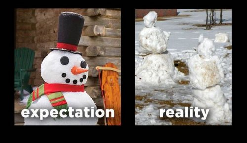

"You are already that which is. But your mind is frightened to let go and still has an idea that something special should happen." --Tony Parsons
Ding ding! Holiday time!
Today in honor of the season, The Mind-Tickler comes bearing gifts that never go on sale because they’re always in such high demand.
A few readers have written to say, as they sit on Mind-Tickler-Santa’s lap asking for their heart’s desire, that lately the Tickler has not done enough talking about awakening and consciousness in a direct way.
There’s been too much about everyday human life, too much about feelings, too much about thoughts, too much how-do-we-deal-with-this.
Too much brown paper wrapping, not enough sparkly special paper and ribbons.
That’s not going to get anyone awakened. Let’s get with the enlightenment. Bring on the woo!
Which I get. I mean, for many folks it’s been yet another year of seeking without finding Enlightenment-Santa and his bag of special treats.
And it's true that often The Tickler uses the struggles and pain of being human as a doorway into the grand cavern of awakened diaper-wearing, meditation-filled caves so many are hoping to enter and never leave.
So maybe the Tickler is tickling the wrong things for the enlightenment chase and we need to be more direct, more to the point, more obvious.
Maybe more like Rupert, who can squeeze the word “aware” into one small place 4 times.
“Only awareness is aware. Awareness is aware of itself.” --Rupert Spira
See? That’s how it's done. Take a lesson, Judith.
So in hopes the Tickler can redeem itself, let’s try to catch up by playing a little holiday game. Maybe this will be the perfect giftie to bring the transcendence so longed for.
So get comfy and close your eyes. Imagine it’s cold outside, and snowing. You’re all bundled up. Feel the fuzziness inside your mittens, the heaviness of your boots, the icy burn on the cheeks. Smell the crisp air and light snow falling.
Now crunch on up to that nearby house with the warmly lit golden windows and knock on the door. Hear your knock, hear the creak of the opening door. “Ho ho ho!” says the deep voice, “Come in.” You enter the warm room, hug Santa and Mrs. Claus (they’re Covid-immune), and sit down in front of a warm fire, feel the glow on your cheeks, watch the snow melting on your boots.
And then after enjoying hot chocolate laced with a bit of whiskey (smell it?), it’s back outside, lifting knees high to clear the snow as you head home. Arriving back at your own door, you sit back in your favorite seat and open your eyes.
There you go! A personal visit to Santa’s home. And now back to your own home, reading The Mind-Tickler.
But of course that Santa trip wasn’t real. It was just pretend, fantasy, made up. It was imagined. You’ve been here the whole time.
Right?
But what is imagination?
Can you be certain that what just wandered to Santa’s house was only a story, not real, and not you, as conscious awareness?
Does consciousness/awareness (Ding! Extra points for using the words twice in two sentences) have to look a certain way to be what you’re seeking?
Because if not, perhaps the one difference between what is ordinarily called “real” and what isn’t…
Is the body. One trip - the one to your chair- moves the body, and one- the one visiting Santa-doesn’t.
And as every nondualist knows and has heard a zillion times, we’re not the body.
So if what you are is not the body, or housed in the body, then
We just took as trip to visit Santa, and it was as real as any trip in your body-moving everyday life.
Without the body as determiner of reality, there’s zero difference.
Because consciousness (ding!) is everything. It’s every color, every sensation, every thought and mental image. It’s every idea of you as an individual. It’s imagination and ideas and wishes and desires.
It’s not just some idealized notion of an altered state of quiet spacey bliss.
Awareness (ding!) is not special like having Christmas morning all the time. It’s not fancy or rare. It’s everyday, everywhere, everything.
It doesn’t come with its own secret language either. Or with dings and extra points (sigh).
Daily life is consciousness. Daily life is awareness. Enlightenment lives in the everyday.
Which means the stuff the Tickler often writes about, the stuff that looks like it’s just mundane annoying fervently-wish-it-was-different human foibles, is...
exactly what you’ve been seeking.
Here it is. Consciousness appearing as you and your loved ones and all those thoughts about the good and bad, the liked and disliked, of all that.
Though you realize of course this also means you are about as real as Santa.
Which may not be the woo you were hoping for. I mean, it’s not Rupert or Adya or Parsons, who will happily tell you all this in more enlightened words that rack up the dings.
Still, it’s the woo that is. It's the woo of the everyday and everything.
Not grand perhaps, but still consciousness.
So welcome to what has always been here while you looked everywhere for it.
Please enjoy a cookie on Santa.
I’m wishing you all the amazingness of brown paper wrapping, this and every holiday season.
Click here to subscribe to get your Mind-Tickled every week.
Click here to see Judy on Buddha at the Gas Pump. https://www.youtube.com/watch?v=MnxlpQC2PBU&t=6s
"That one, You, the only one that truly is, is already Conscious Presence. There is no other one."
--Rupert Spira
"What is Self Realization? A mere phrase. People expect some miracle to happen, something to drop from Heaven in a flash. It's nothing of the sort. Only the notion that you're the body, that you're this or that, will go, and you remain as you are."
-- Ramana Maharshi
